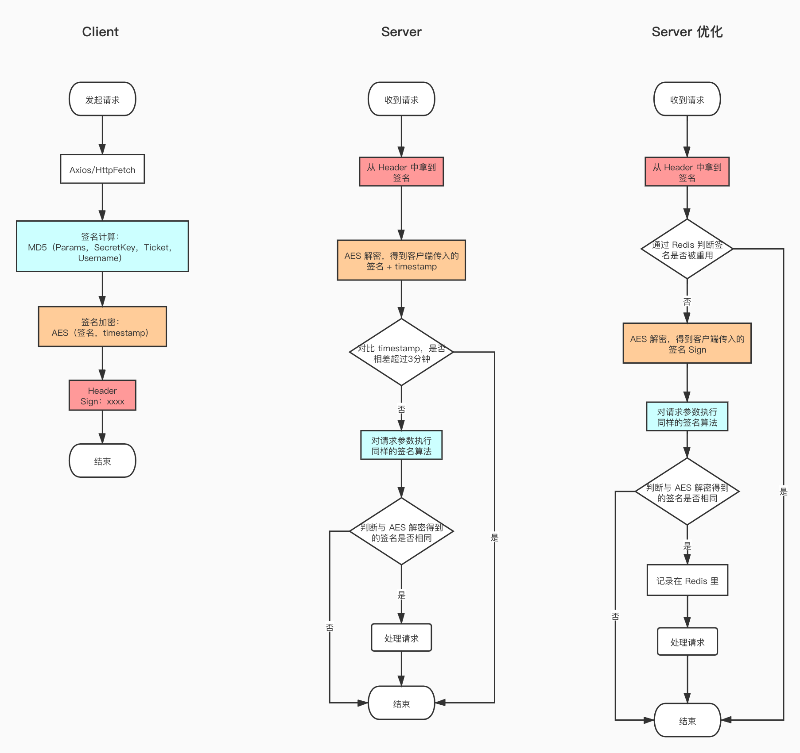

最近参与公司一个重要的数据产品，因为数据安全级别高，常用的权限控制方式无法防止用户通过接口工具进行恶意访问，故设计此方案用于保证接口安全
加密分类
对称加密
会话前双方约定一个固定的密钥，客户端用此密钥进行加密，服务端用此密钥进行解密。
特点：算法公开，计算量小，加密速度快。
常见算法：AES。
非对称加密
两个密钥：公钥和私钥，客户端使用公钥进行加密，服务端用私钥进行解密。
特点：加密和解密时间长、速度慢，只适合对少量的数据进行加密。
使用场景：https 会话前期、CA 数字证书、信息加密等。
常见算法：RSA。
Hash 算法
把任意长度的输入，通过 hash 算法，变换成固定长度的输出。
特点：不可逆，易计算。
使用场景：文件或字符串一致性校验、数字签名、鉴权协议。
常见算法：MD5
方案

关键点
client 端（浏览器）
请求参数params 处理
GET 请求
因为 get 请求传输到服务端是没有数据类型的，即服务端收到的都是字符串。所以使用 url 键值对的格式生成字符串。POST、PUT、DELETE 请求
- 如果 content-type 是 application/json，服务端接收到的是有数据类型的，故将 body 进行 json.stringify 序列化即可
- 如果 content-type 是 application/x-www-form-urlencoded，服务端收到的是类似 url 编码的形式，使用类似 GET 请求的方式处理
- 如果 content-type 是 multipart/form-data，为文件上传，这里不做处理
- 签名加密里 timestamp 作用
server 端方案一里：使用 timestamp 用来防止接口重复利用。
server 端方案二里：使用 timestamp 保证每次发请求的 sign 唯一。
server 端（node）
- 方案一：
使用 timestamp 来防止接口被重复利用，客户端发请求时带上当前时间的时间戳，服务端接收到 timestamp 后与当前时间进行对比，如果时间差大于3分钟，则认为是无效请求。
而因为客户端时间（也是浏览器端时间）不能保证是标准时间，所以此方案可能会导致。故采用方案二: - 方案二：
使用 redis 将每次请求过来的 sign 进行存储，如果接收到的请求 sign 存在于 redis 里，则认为是无效请求，保证每个请求只能被用一次。